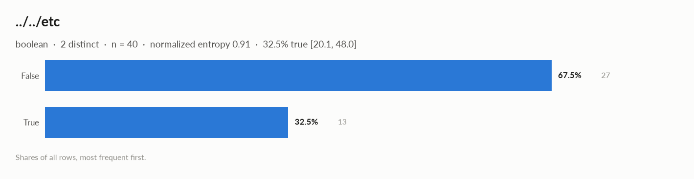
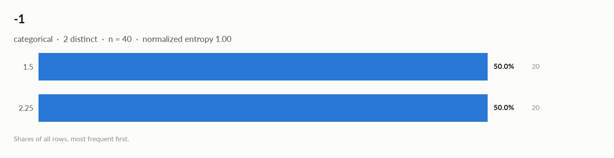

elessar report
40 rows × 6 columns · pandas.DataFrame · read in 0.0s · generated 2026-10-28 11:02 by elessar 0.3.0
Key findings Overall statistics Time series Distributions Data quality Multivariate statistics Preparation plan Attribute statistics Run Key findings
MEDIUM -: constant column carries no information -> drop itMEDIUM price ($): should-be-numeric: df['price ($)'] = pd.to_numeric(df['price ($)'], errors='coerce')Overall statistics
Rows 40 Columns 6 Memory 12.4 KB Potential saving 4.1 KB Pandas dtypes object=3, bool=1, float64=1, datetime64[us, UTC]=1 Semantic types boolean=1, constant=1, json_like=1, datetime=1, categorical=1, numeric_discrete=1 Duplicate rows 0 (0.0%) Missing cells 0.0%
Numeric columns at a glance
column count missing mean std min median max skew kurtosis outliers best fit price ($)40 0.0% 1.181e+21 0 1.181e+21 1.181e+21 1.181e+21 - - 0.0% -
Categorical columns at a glance
column type count missing distinct most frequent share entropy ../../etcboolean 40 0.0% 2 False 67.5% 0.91 -1categorical 40 0.0% 2 1.5 50.0% 1
Time series
The table is a single time series (one row per timestamp) , indexed by xxxxxxxxxxxxxxxxxxxxxxxxxxxxxxxxxxxxxxxxxxxxxxxxxxxxxxxxxxxxxxxxxxxxxxxxxxxxxxxxxxxxxxxxxxxxxxxxxxxxxxxxxxxxxxxxxxxxxxxxxxxxxxxxxxxxxxxxxxxxxxxxxxxxxxxxxxxxxxxxxxxxxxxxxxxxxxxxxxxxxxxxxxxxxxxxxxxxxxxxxxxxxxxxxxxxxxxxxxxxxxxxxxxxxxxxxxxxxxxxxxxxxxxxxxxxxxxxxxxxxxxxxxxxxxxxxxxxxxxxxxxxxxxxxxxxxxxxxxxx: hour steps, 100% regular, 2021-01-01 → 2021-01-02, 40 steps.
series steps trend stationarity lag-1 autocorr. seasonality price ($)40 - - - -
Treatment
step what to do code Windows rolling windows of 3 steps and lags 1, 2 as features, shifted by one step so they only see the past df['lag_1'] = df['<value>'].shift(1)
df['lag_2'] = df['<value>'].shift(2)
df['roll_mean_3'] = df['<value>'].shift(1).rolling(3).mean()Validation never shuffle: use expanding-window folds (below), with a gap equal to the forecast horizon from sklearn.model_selection import TimeSeriesSplit
cv = TimeSeriesSplit(n_splits=5, test_size=4, gap=0)Augmentation on the training folds only: jittering (noise at 3-5% of the std), scaling, window slicing, magnitude warping rng = np.random.default_rng(0)
jittered = y + rng.normal(0, 0.03 * y.std(), len(y))
scaled = y * rng.normal(1, 0.1)
start = rng.integers(0, len(y) // 10); sliced = y[start:start + int(0.9 * len(y))]
warp = np.interp(np.arange(len(y)), np.linspace(0, len(y) - 1, 6), rng.normal(1, 0.1, 6))
warped = y * warp
Validation folds (expanding window, on the real dates)
fold train validate train steps validation steps 1 2021-01-01 → 2021-01-01 19:00 2021-01-01 20:00 → 2021-01-01 23:00 20 4 2 2021-01-01 → 2021-01-01 23:00 2021-01-02 → 2021-01-02 03:00 24 4 3 2021-01-01 → 2021-01-02 03:00 2021-01-02 04:00 → 2021-01-02 07:00 28 4 4 2021-01-01 → 2021-01-02 07:00 2021-01-02 08:00 → 2021-01-02 11:00 32 4 5 2021-01-01 → 2021-01-02 11:00 2021-01-02 12:00 → 2021-01-02 15:00 36 4
Distributions
Normality is tested four ways (Shapiro-Wilk on up to 5,000 values, D'Agostino K², Jarque-Bera, Anderson-Darling); the verdict is 'not normal' when at least half of them reject at alpha 0.05. Every candidate distribution is fitted by maximum likelihood and ranked by AIC; the Akaike weight is its relative support among the candidates.
With thousands of values every test rejects even a good fit, so read KS D (the largest gap between the fitted and the observed cumulative distribution) as the size of the misfit: below 0.03 close, below 0.08 fair, above poor. KS p-values are optimistic since the parameters come from the same data. For integer columns the gap is measured on the integer support and the p-value comes from a chi-square goodness-of-fit test.
column n normality tests rejecting best fit parameters weight ΔAIC to 2nd KS D KS p shape price ($)40 constant - not enough distinct values to fit a distribution
Data quality
severity column message medium -constant column carries no information -> drop it medium price ($)should-be-numeric: df['price ($)'] = pd.to_numeric(df['price ($)'], errors='coerce') info - dtype optimizations save ~4.1 KB: -1 -> category (see quality['dtype_optimizations'] for code) info xxxxxxxxxxxxxxxxxxxxxxxxxxxxxxxxxxxxxxxxxxxxxxxxxxxxxxxxxxxxxxxxxxxxxxxxxxxxxxxxxxxxxxxxxxxxxxxxxxxxxxxxxxxxxxxxxxxxxxxxxxxxxxxxxxxxxxxxxxxxxxxxxxxxxxxxxxxxxxxxxxxxxxxxxxxxxxxxxxxxxxxxxxxxxxxxxxxxxxxxxxxxxxxxxxxxxxxxxxxxxxxxxxxxxxxxxxxxxxxxxxxxxxxxxxxxxxxxxxxxxxxxxxxxxxxxxxxxxxxxxxxxxxxxxxxxxxxxxxxxa time series, hour steps -> time-ordered validation, lags and windows (see Time series)
Memory: suggested dtypes save 4.1 KB
column current suggested saving code -1object category 4.1 KB (94%) df['-1'] = df['-1'].astype('category')
Multivariate statistics
Dimensionality reduction
PCA not applicable: needs at least 3 numeric columns and enough rows (0 columns, 40 rows)
Associations between columns
1 pairs tested, 0 significant after Benjamini-Hochberg correction (alpha 0.05).
Preparation plan
Cleaning: wrong formats 2. Transformation: decomposition 1, encode 2.
Cleaning
action column why code Wrong formats -1should-be-category df['-1'] = df['-1'].astype('category')Wrong formats price ($)should-be-numeric df['price ($)'] = pd.to_numeric(df['price ($)'], errors='coerce')
Transformation
action column why code Decomposition xxxxxxxxxxxxxxxxxxxxxxxxxxxxxxxxxxxxxxxxxxxxxxxxxxxxxxxxxxxxxxxxxxxxxxxxxxxxxxxxxxxxxxxxxxxxxxxxxxxxxxxxxxxxxxxxxxxxxxxxxxxxxxxxxxxxxxxxxxxxxxxxxxxxxxxxxxxxxxxxxxxxxxxxxxxxxxxxxxxxxxxxxxxxxxxxxxxxxxxxxxxxxxxxxxxxxxxxxxxxxxxxxxxxxxxxxxxxxxxxxxxxxxxxxxxxxxxxxxxxxxxxxxxxxxxxxxxxxxxxxxxxxxxxxxxxxxxxxxxxa date is not a feature: decompose into calendar parts d = pd.to_datetime(df['xxxxxxxxxxxxxxxxxxxxxxxxxxxxxxxxxxxxxxxxxxxxxxxxxxxxxxxxxxxxxxxxxxxxxxxxxxxxxxxxxxxxxxxxxxxxxxxxxxxxxxxxxxxxxxxxxxxxxxxxxxxxxxxxxxxxxxxxxxxxxxxxxxxxxxxxxxxxxxxxxxxxxxxxxxxxxxxxxxxxxxxxxxxxxxxxxxxxxxxxxxxxxxxxxxxxxxxxxxxxxxxxxxxxxxxxxxxxxxxxxxxxxxxxxxxxxxxxxxxxxxxxxxxxxxxxxxxxxxxxxxxxxxxxxxxxxxxxxxxx'], errors='coerce')
df['xxxxxxxxxxxxxxxxxxxxxxxxxxxxxxxxxxxxxxxxxxxxxxxxxxxxxxxxxxxxxxxxxxxxxxxxxxxxxxxxxxxxxxxxxxxxxxxxxxxxxxxxxxxxxxxxxxxxxxxxxxxxxxxxxxxxxxxxxxxxxxxxxxxxxxxxxxxxxxxxxxxxxxxxxxxxxxxxxxxxxxxxxxxxxxxxxxxxxxxxxxxxxxxxxxxxxxxxxxxxxxxxxxxxxxxxxxxxxxxxxxxxxxxxxxxxxxxxxxxxxxxxxxxxxxxxxxxxxxxxxxxxxxxxxxxxxxxxxxxx' + '_year'], df['xxxxxxxxxxxxxxxxxxxxxxxxxxxxxxxxxxxxxxxxxxxxxxxxxxxxxxxxxxxxxxxxxxxxxxxxxxxxxxxxxxxxxxxxxxxxxxxxxxxxxxxxxxxxxxxxxxxxxxxxxxxxxxxxxxxxxxxxxxxxxxxxxxxxxxxxxxxxxxxxxxxxxxxxxxxxxxxxxxxxxxxxxxxxxxxxxxxxxxxxxxxxxxxxxxxxxxxxxxxxxxxxxxxxxxxxxxxxxxxxxxxxxxxxxxxxxxxxxxxxxxxxxxxxxxxxxxxxxxxxxxxxxxxxxxxxxxxxxxxx' + '_month'] = d.dt.year, d.dt.month
df['xxxxxxxxxxxxxxxxxxxxxxxxxxxxxxxxxxxxxxxxxxxxxxxxxxxxxxxxxxxxxxxxxxxxxxxxxxxxxxxxxxxxxxxxxxxxxxxxxxxxxxxxxxxxxxxxxxxxxxxxxxxxxxxxxxxxxxxxxxxxxxxxxxxxxxxxxxxxxxxxxxxxxxxxxxxxxxxxxxxxxxxxxxxxxxxxxxxxxxxxxxxxxxxxxxxxxxxxxxxxxxxxxxxxxxxxxxxxxxxxxxxxxxxxxxxxxxxxxxxxxxxxxxxxxxxxxxxxxxxxxxxxxxxxxxxxxxxxxxxx' + '_dow'], df['xxxxxxxxxxxxxxxxxxxxxxxxxxxxxxxxxxxxxxxxxxxxxxxxxxxxxxxxxxxxxxxxxxxxxxxxxxxxxxxxxxxxxxxxxxxxxxxxxxxxxxxxxxxxxxxxxxxxxxxxxxxxxxxxxxxxxxxxxxxxxxxxxxxxxxxxxxxxxxxxxxxxxxxxxxxxxxxxxxxxxxxxxxxxxxxxxxxxxxxxxxxxxxxxxxxxxxxxxxxxxxxxxxxxxxxxxxxxxxxxxxxxxxxxxxxxxxxxxxxxxxxxxxxxxxxxxxxxxxxxxxxxxxxxxxxxxxxxxxxx' + '_hour'] = d.dt.dayofweek, d.dt.hourEncode ../../etcboolean: 0/1 df['../../etc'] = df['../../etc'].astype(bool).astype(int)Encode -12 labels: one-hot df = pd.get_dummies(df, columns=['-1'], dummy_na=True)
Attribute statistics
../../etc · booleanbool · bool dtype
Profile
type boolean dtype bool values 40 missing 0 (0.0%) distinct 2 (5.0%) memory 40 B mode False ×27
Labels
cardinality 2 entropy 0.91 bits (0.91 of max) Gini impurity 0.439 imbalance ×2.077 rare labels 0 (0.0% of rows) uniform? chi² p 0.027 true 32.5% [20.1, 48.0]
Most frequent values
value count share False27 67.5% True13 32.5%

- · constantfloat64 · single value: '0.0'
Profile
type constant dtype float64 values 40 missing 0 (0.0%) distinct 1 (2.5%) memory 320 B mode 0.0 ×40
Most frequent values
value count share 0.040 100.0%
NaN · json_likeobject · cells contain Python dict/list objects
Profile
type json_like dtype object values 40 missing 0 (0.0%) distinct 21 (52.5%) memory 5.3 KB mode [1, 2] ×20
Most frequent values
value count share [1, 2]20 50.0% {'k': 0}1 2.5% {'k': 2}1 2.5% {'k': 4}1 2.5% {'k': 6}1 2.5% {'k': 8}1 2.5% {'k': 10}1 2.5% {'k': 12}1 2.5% {'k': 14}1 2.5% {'k': 16}1 2.5%
Python types: dict 20, list 20 Top keys: k (20) xxxxxxxxxxxxxxxxxxxxxxxxxxxxxxxxxxxxxxxxxxxxxxxxxxxxxxxxxxxxxxxxxxxxxxxxxxxxxxxxxxxxxxxxxxxxxxxxxxxxxxxxxxxxxxxxxxxxxxxxxxxxxxxxxxxxxxxxxxxxxxxxxxxxxxxxxxxxxxxxxxxxxxxxxxxxxxxxxxxxxxxxxxxxxxxxxxxxxxxxxxxxxxxxxxxxxxxxxxxxxxxxxxxxxxxxxxxxxxxxxxxxxxxxxxxxxxxxxxxxxxxxxxxxxxxxxxxxxxxxxxxxxxxxxxxxxxxxxxxx · datetimedatetime64[us, UTC] · datetime dtype
Profile
type datetime dtype datetime64[us, UTC] values 40 missing 0 (0.0%) distinct 40 (100.0%) memory 320 B
Time
first 2021-01-01 last 2021-01-02 15:00:00 span 1 days 15:00:00 frequency h duplicated timestamps 0 in the future 0 before 1900 0 largest gap 0 days 01:00:00 (2021-01-01 → 2021-01-01 01:00:00)
Rows by weekday: Fri 24, Sat 16 Rows by hour: 0 2, 1 2, 2 2, 3 2, 4 2, 5 2, 6 2, 7 2, 8 2, 9 2, 10 2, 11 2, 12 2, 13 2, 14 2, 15 2, 16 1, 17 1, 18 1, 19 1, 20 1, 21 1, 22 1, 23 1 -1 · categoricalobject · Decimal objects, treated as labels
Profile
type categorical dtype object values 40 missing 0 (0.0%) distinct 2 (5.0%) memory 4.4 KB mode 1.5 ×20
Labels
cardinality 2 entropy 1.00 bits (1.00 of max) Gini impurity 0.500 imbalance ×1 rare labels 0 (0.0% of rows) uniform? chi² p 1
Most frequent values
value count share 1.520 50.0% 2.2520 50.0%
should-be-category : df['-1'] = df['-1'].astype('category')
price ($) · numeric_discreteobject · numbers in object column: integer values (1 distinct)
Profile
type numeric_discrete dtype object values 40 missing 0 (0.0%) distinct 40 (100.0%) memory 1.7 KB
Center
mean 1.181e+21 95% CI of mean [1.181e+21, 1.181e+21] median 1.181e+21 95% CI of median [1.181e+21, 1.181e+21] trimmed mean 1.181e+21 geometric mean 1.181e+21 harmonic mean 1.181e+21
Spread
std 0 variance 0 sem 0 IQR 0 MAD 0 CV 0 range 0
Quantiles
min 1.181e+21 p1 1.181e+21 p5 1.181e+21 p25 1.181e+21 p50 1.181e+21 p75 1.181e+21 p95 1.181e+21 p99 1.181e+21 max 1.181e+21 sum 4.722e+22
Shape
skewness - excess kurtosis - KDE modes - bimodality coef. - decimals 0
Outliers & counts
IQR fences [1.181e+21, 1.181e+21] outside fences 0 (0.0%) |z| > 3 0 (0.0%) modified z > 3.5 0 (0.0%) zeros 0 negatives 0 infinite 0
should-be-numeric : df['price ($)'] = pd.to_numeric(df['price ($)'], errors='coerce')Run
Source pandas.DataFrame · read in 0.0s Processes 3 for the analysis, 3 for the charts (14 cores available) Time 1.2s (load 0.0s, columns 0.2s, associations 0.2s, quality 0.0s, charts 0.6s) Significance alpha 0.05, Benjamini-Hochberg false discovery rate per family of tests Versions elessar 0.3.0 · Python 3.12.14 · pandas 3.1.0 · numpy 2.5.4 · scipy 1.18.1


![xxxxxxxxxxxxxxxxxxxxxxxxxxxxxxxxxxxxxxxxxxxxxxxxxxxxxxxxxxxxxxxxxxxxxxxxxxxxxxxxxxxxxxxxxxxxxxxxxxxxxxxxxxxxxxxxxxxxxxxxxxxxxxxxxxxxxxxxxxxxxxxxxxxxxxxxxxxxxxxxxxxxxxxxxxxxxxxxxxxxxxxxxxxxxxxxxxxxxxxxxxxxxxxxxxxxxxxxxxxxxxxxxxxxxxxxxxxxxxxxxxxxxxxxxxxxxxxxxxxxxxxxxxxxxxxxxxxxxxxxxxxxxxxxxxxxxxxxxxxx: xxxxxxxxxxxxxxxxxxxxxxxxxxxxxxxxxxxxxxxxxxxxxxxxxxxxxxxxxxxxxxxxxxxxxxxxxxxxxxxxxxxxxxxxxxxxxxxxxxxxxxxxxxxxxxxxxxxxxxxxxxxxxxxxxxxxxxxxxxxxxxxxxxxxxxxxxxxxxxxxxxxxxxxxxxxxxxxxxxxxxxxxxxxxxxxxxxxxxxxxxxxxxxxxxxxxxxxxxxxxxxxxxxxxxxxxxxxxxxxxxxxxxxxxxxxxxxxxxxxxxxxxxxxxxxxxxxxxxxxxxxxxxxxxxxxxxxxxxxxx](03_xxxxxxxxxxxxxxxxxxxxxxxxxxxxxxxxxxxxxxxx_time.png)